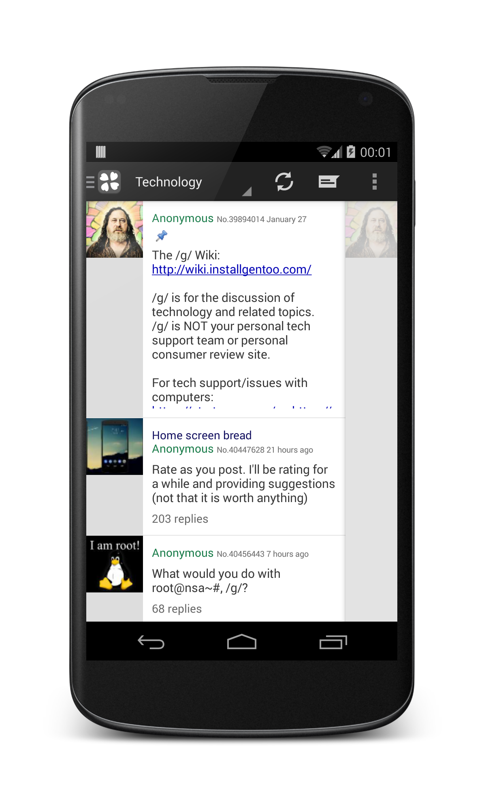
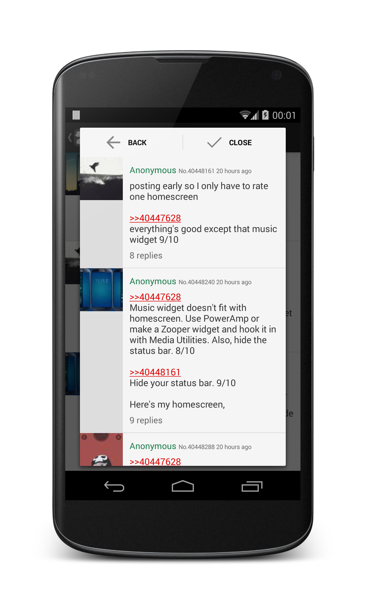
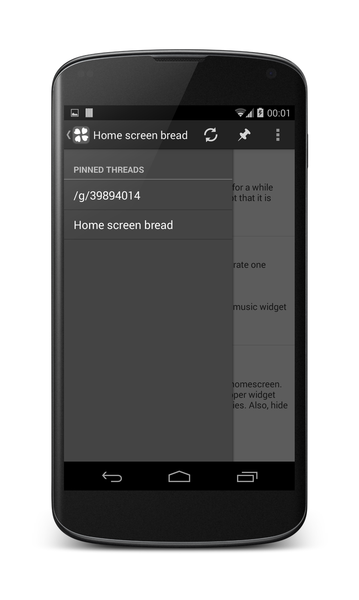

THE NEW 4CHAN ANDROID BROWSER
POST FROM TOILET. HEH.
download now
Play Store
|
F-Droid
|
APK
Open Source
New post notifications
Smooth Image Viewer
Auto thread reload
HTTPS only
Fast reply
Free
4chan pass support
Pinned threads
Fast
WebM support
Themes (soon)
  